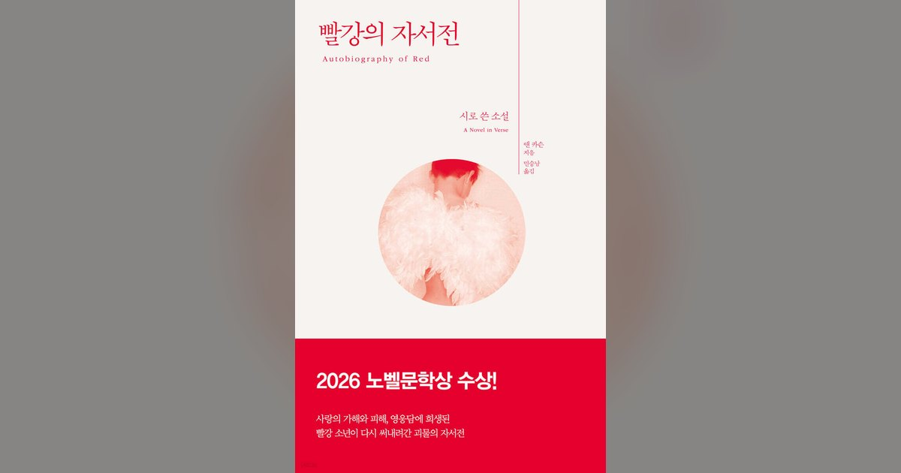

빨강의 자서전 추천, 헤라클레스보다 게리온의 마음이 궁금하다면
영웅이 괴물을 쓰러뜨리면 신화는 끝납니다. 그런데 그 괴물이 자기 이야기를 쓴다면, 영웅의 승리부터 적을까요? 앤 카슨의 『빨강의 자서전』을 권하고 싶은 출발점은 여기에 있습니다.
사진: 한겨레출판·YES24 도서 상세 · 원본

영웅이 괴물을 쓰러뜨리면 신화는 끝납니다. 그런데 그 괴물이 자기 이야기를 쓴다면, 영웅의 승리부터 적을까요? 앤 카슨의 『빨강의 자서전』을 권하고 싶은 출발점은 여기에 있습니다.
사진: 한겨레출판·YES24 도서 상세 · 원본